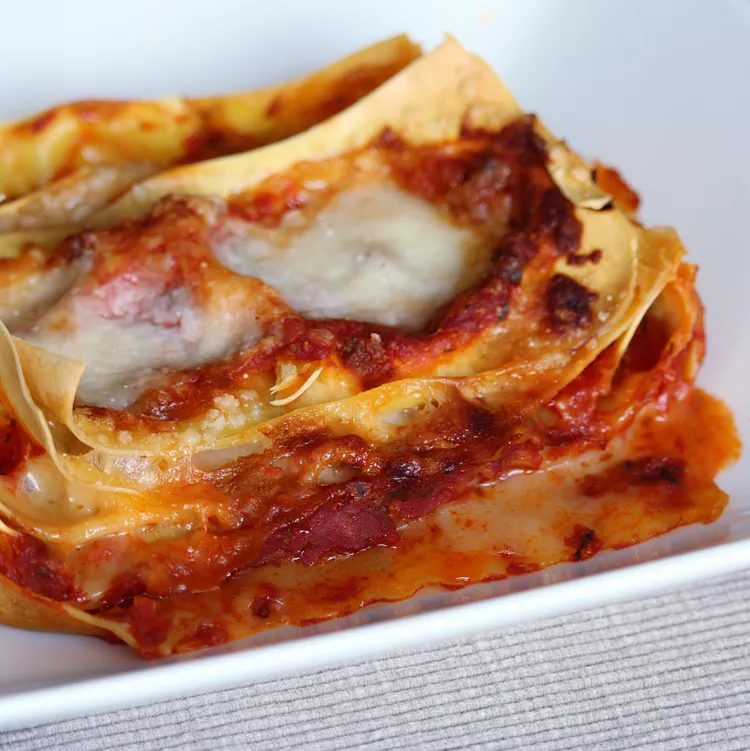

This is the classic lasagne alla Bolognese recipe from the Emilia region in Northern Italy. The Bolognese sauce is made with a mixture of beef and pork mince. The addition of prosciutto, red wine, cinnamon, and nutmeg make it truly authentic.
Heat olive oil in a saucepan over medium heat; cook and stir onion, carrot, shallot, and prosciutto until onion; is translucent and prosciutto releases some fat, about 10 minutes. Add pork and beef; season with 1 teaspoon nutmeg, cinnamon, and salt to taste. Cook and stir over medium-high heat until browned and crumbly, about 10 minutes.
Pour red wine over meat mixture; increase heat and cook until wine evaporates, about 3 minutes. Add tomatoes and mix well; bring to a boil, cover, reduce heat, and simmer, stirring occasionally, until tomatoes break down and flavors of Bolognese sauce have combined, 1 1/2 to 2 hours.